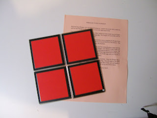

Tetra-Flexagons
12/9/2009
From Donald Woodford:
{kind=link}

I got one of your $25 package of goodies when you were closing Maher Studios. Included in the package was a hexa tetra flexagon. I've finally found a use for it. I want to use it with my Bully presentation. Can you direct me to where I can purchase these. I'm hoping to be able to get one with pictures printed on it.Thanks
* * * * *
From to Donald:* * * * *
Adelia's brother, Jay Yoder, made the Hexa-Tetra-Flexagons. I believe I still have several somewhere. Adding images is a great idea. Maybe you could glue some pictures to the solid colors surfaces. Or print pictures onto a sheet of label stock using a copier, then cut out the images and apply them to the Flexagon.
* * * * *
Note to Blog Readers: The Tetra-Flexagons were simple to use and really quite amazing. The unit appears to have only two sides when in actuality there are six sides! One side of the 8"x8" flat unit has four RED squares (see picture). The other side has four BLACK squares. Fold it in half (like a book) and reopen and the red squares have changed to BURGUNDY! Fold and reopen again and the Black squares have all changed to WHITE! Fold again and reopen and all four squares have now magically changed to GREEN! Fold one final time and reopen and all the squares are now GOLD! Add some "patter" and you had a nice and easy variety bit for the show. (I'll have one of these for give-away shortly.)